1
Step 1
Meet the atoms in fat
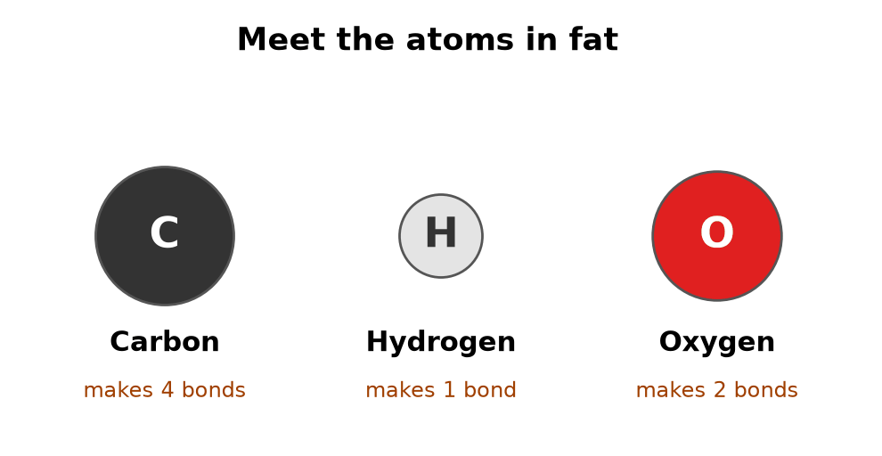
2
Step 2
Single bond vs double bond
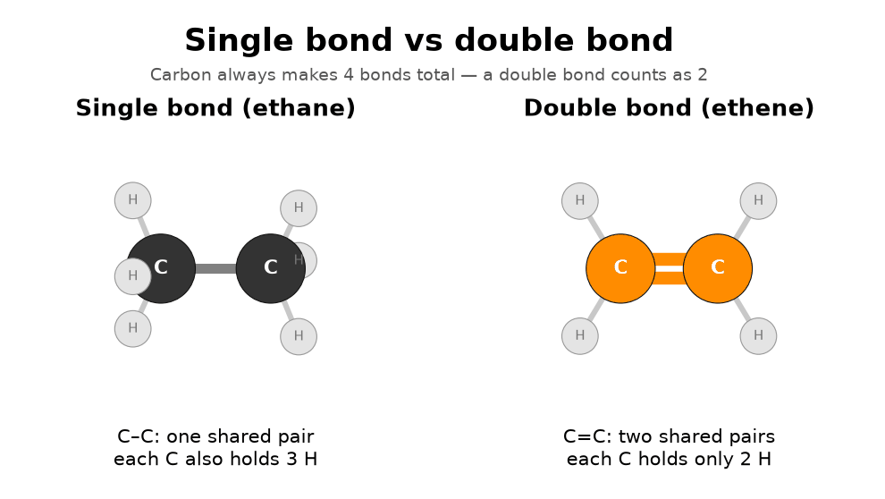
3
Step 3
Carbons link into a zigzag chain
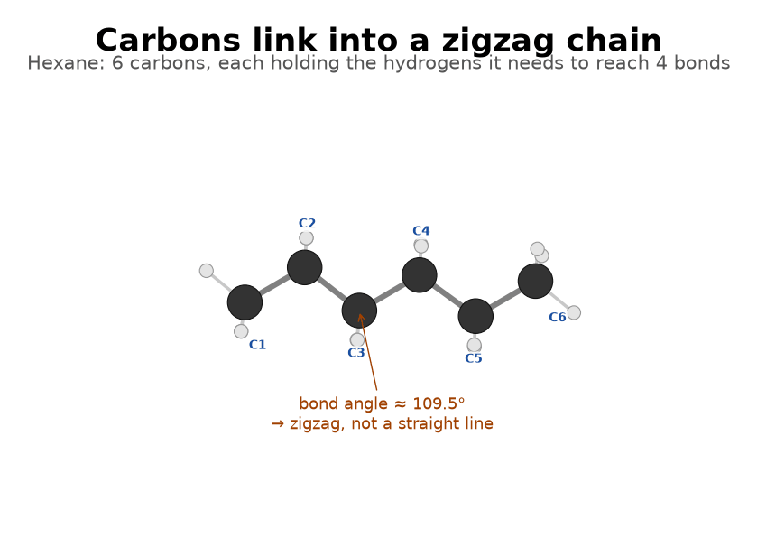
4
Step 4
Three ways to draw the same chain
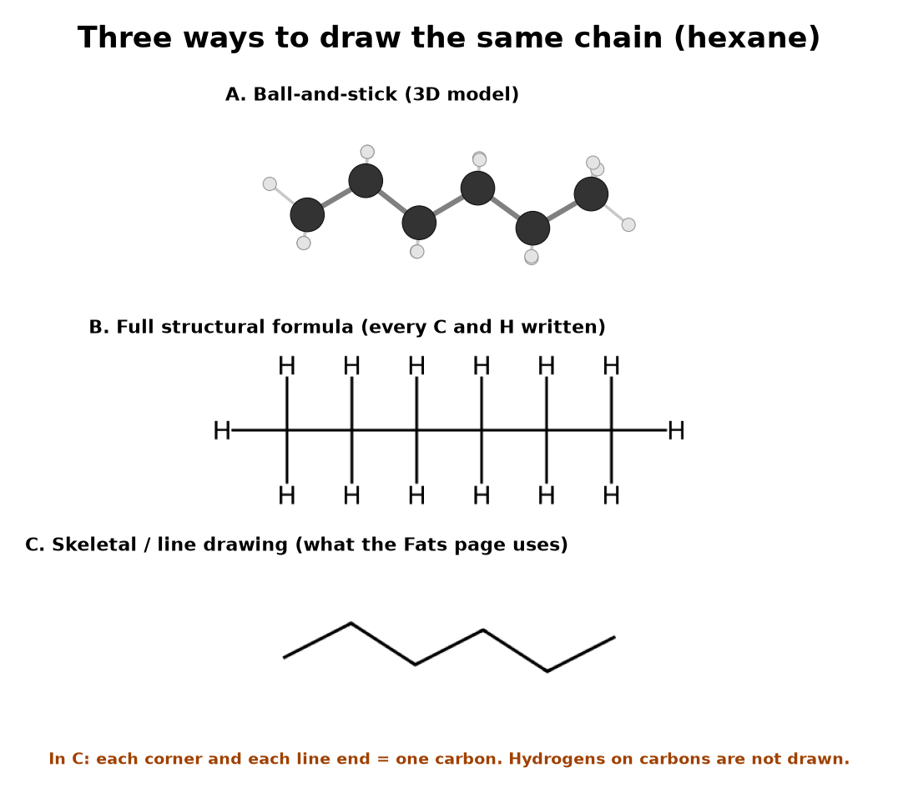
5
Step 5
The acid head: the carboxyl group
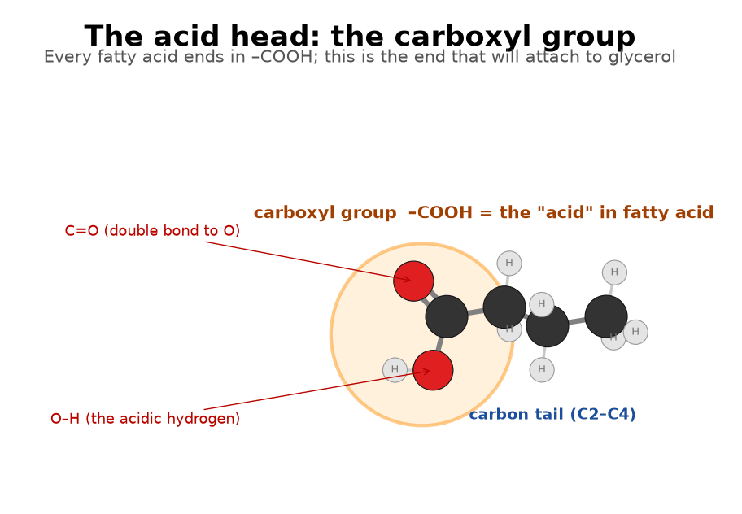
6
Step 6
A fatty acid = acid head + carbon tail
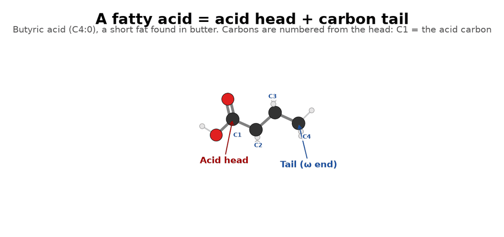
7
Step 7
A long fatty acid: stearic acid
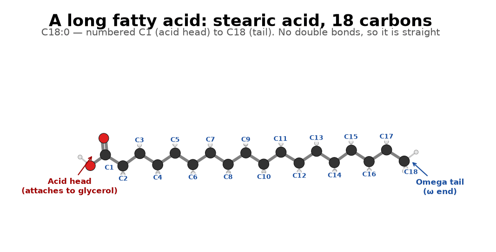
8
Step 8
Saturated = full of hydrogen
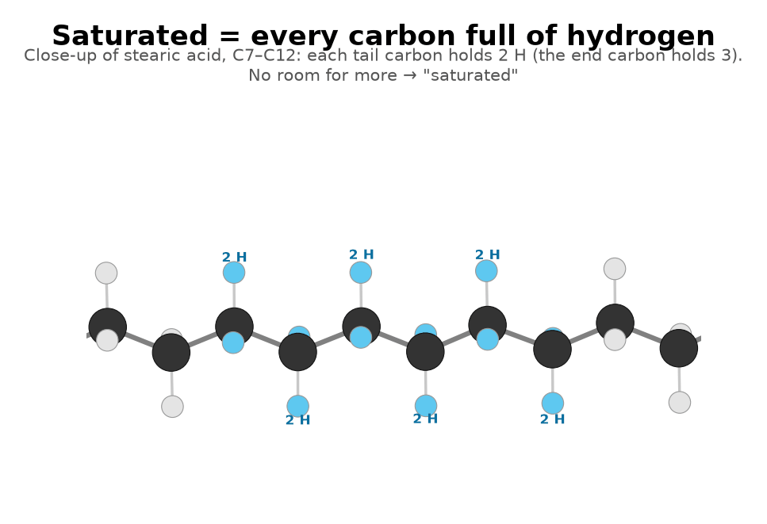
9
Step 9
A double bond removes two hydrogens
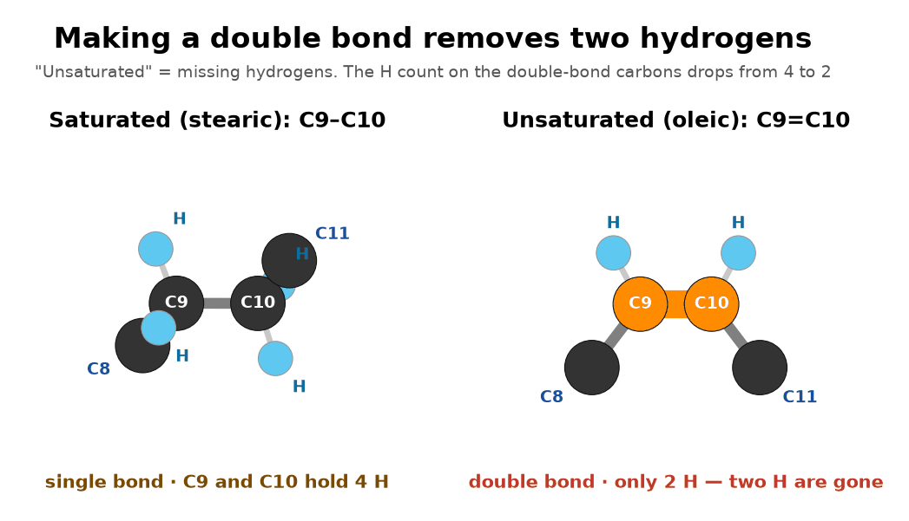
10
Step 10
Cis vs trans
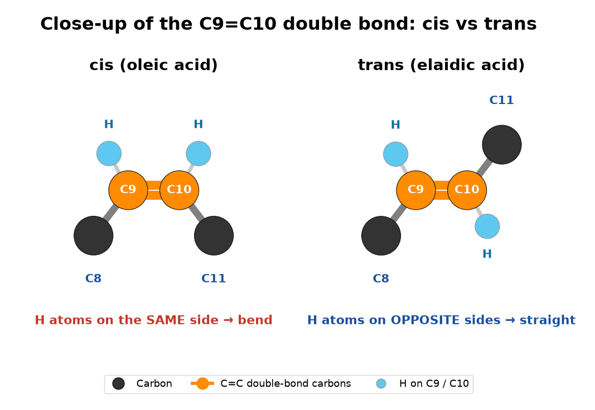
11
Step 11
One cis double bond = one kink: oleic acid
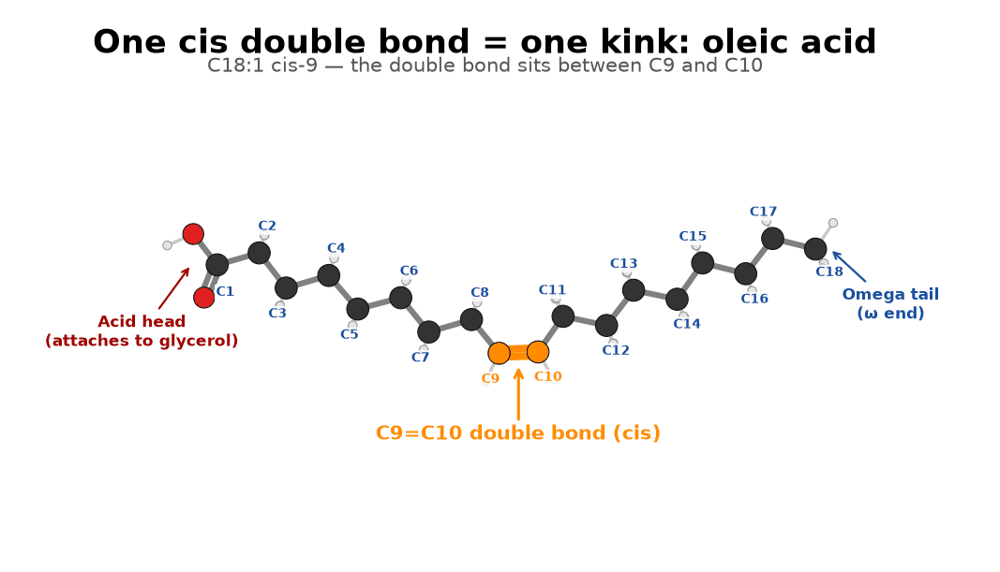
12
Step 12
Straight vs kinked, side by side
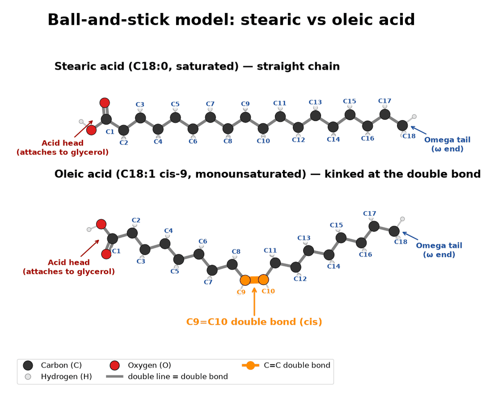
13
Step 13
Space-filling: the real shape
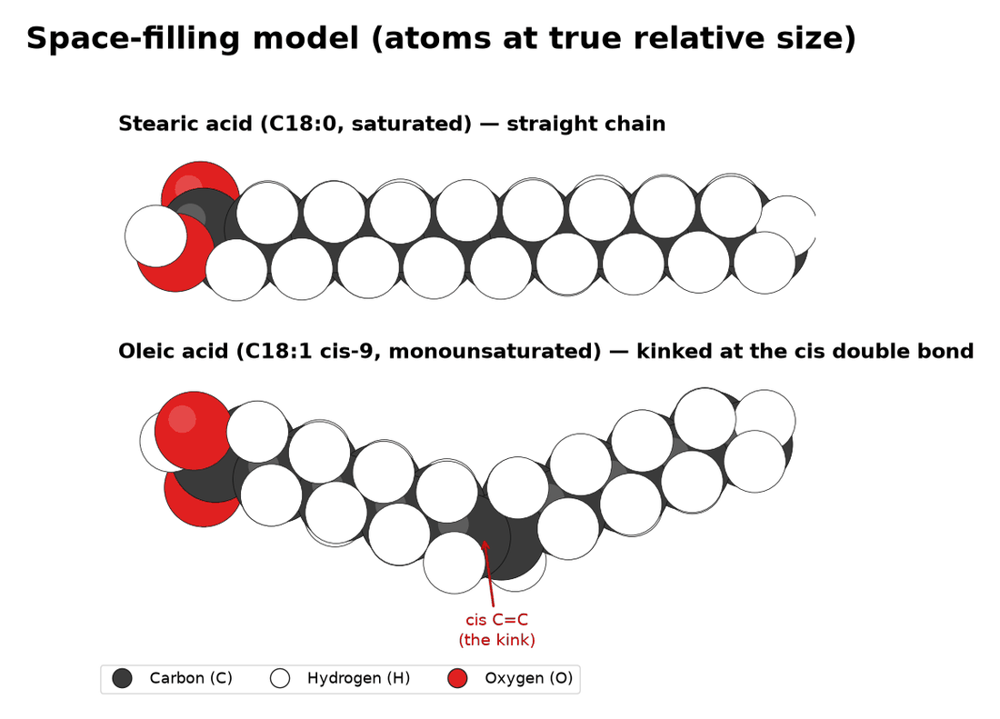
14
Step 14
Why shape decides solid vs liquid
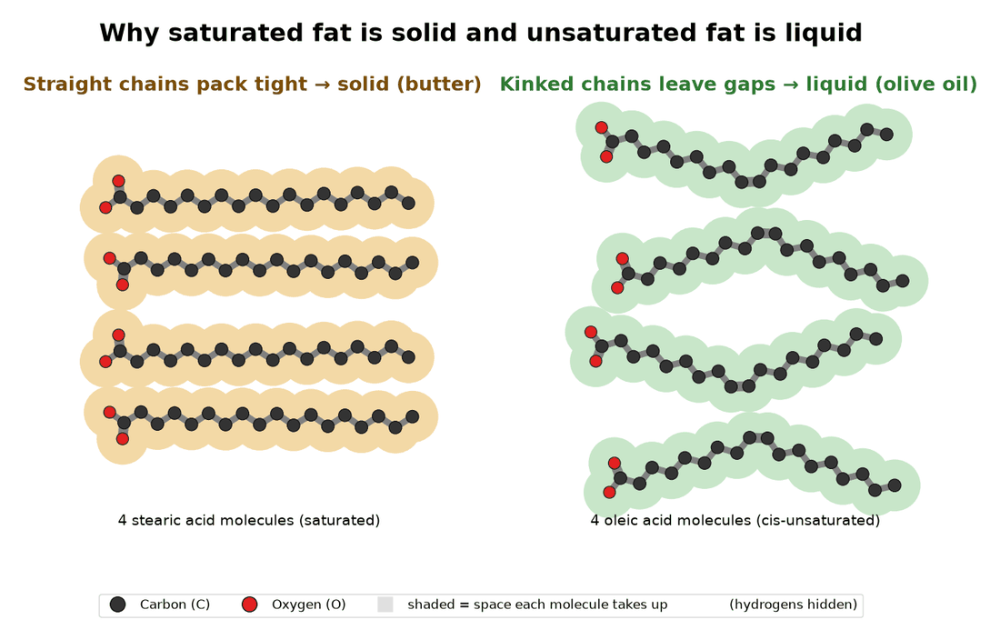
15
Step 15
Omega numbers: count from the tail
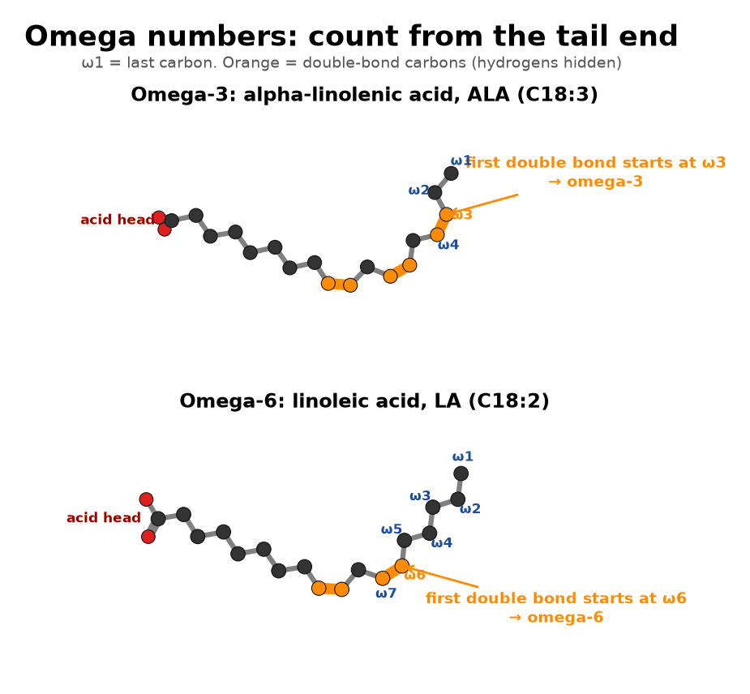
16
Step 16
Putting it together: a triglyceride
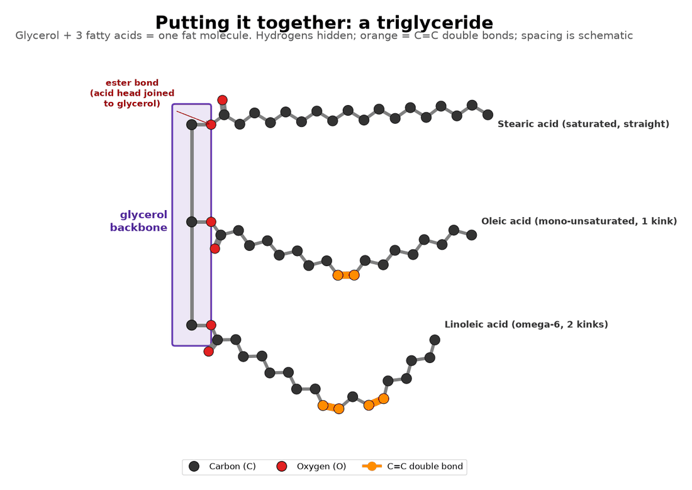